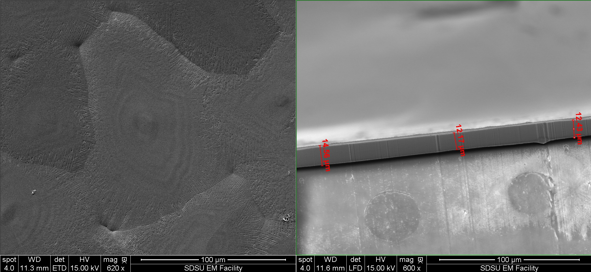

System Description
The Ballistic Manufacturing prototype was designd and manufactured entirely in house at SDSU by my collegues Sumedha Weerasuriya, Kyle Steward and myself. The process involves shooting a mold through a curtain of molten metal causing a thin film to cast onto the mold surface. The system consists of a high presssure pneumatic mold accelerator,high velocity molds (hence “Ballistic”), and a molten metal management system, controlled with Arduino’s. The picture above shows the etire system set up for experimentation. Below is a video animation of the process.
Results
Thickness as low as 1.56μm were produced under the investigated processing parameters. The resulting films were crystalline in nature exhibiting unique 2D-hypoeutectic cellular structures with diameters ranging from of 70μm to 166μm depending on processing conditions. The images below show a single eutectic cell (left) and thickness measurements (right) Overall results prove the viability of BM as a new thick and thin film manufacturing process.
